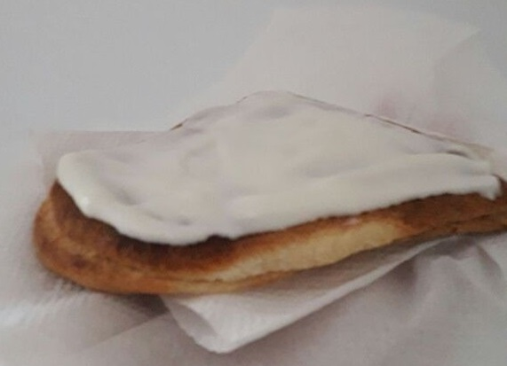
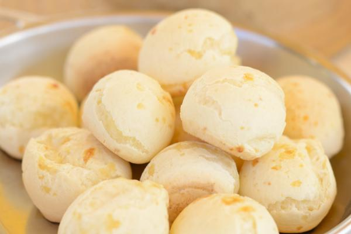

-
- Empanada blanca -
DESCRIPCION
La historia tarijeña cuenta que en el pasado la empanada blanqueada era preparada para ciertos acontecimientos especiales, se compartía en familia y no se producía para la comercialización. Con el tiempo ésta se hizo más popular y fue más requerida por quienes la degustaron por primera vez.
INGREDIENTES
3 Tazas de harina de trigo cernidas
1/2 Taza de azúcar impalpable
2 Huevos (separar yemas de claras)
3 Cucharadas de mantequilla
2 Cucharillas de polvo de hornear
-
2 Cucharillas de esencia de vainilla (opcional)
Leche tibia (lo necesario)
Pizca de sal
Lacayote bastante maduro
-
Azúcar (cantidad similar a la pulpa del Lacayote)
Canela entera, nueces picadas, Uvas pasas
3 Huevos (solo claras)
Azúcar impalpable
Gotas de limón
PREPARACION
-
En un recipiente, mezcle los ingredientes secos. Aparte bata las yemas con la mantequilla y el azúcar, hasta obtener una pasta cremosa, e incorpore al anterior preparado, alternando con la leche. Obtendrá una masa compacta media seca, y mas bien no tan suave, lo cual sirve para poder rellenarla.
-
Haga bolitas uniformes, luego estírelas con el uslero para darles una forma ovalada.
-
Prepare el día anterior, el relleno o dulce de lacayote: Saque la pulpa con la ayuda de un cuchillo, escogiendo las semillas. Una vez obtenida toda la pulpa, mida una cantidad igual de azúcar y mezcle hasta que se incorporen; deje reposar por lo menos 24 horas.
-
El jugo obtenido durante el reposo hágalo hervir, agregando canela entera, nueces picadas y uvas pasas, hasta que tome punto; una vez frío rellene las empanadas, pasando por los bordes, con huevo batido, dóblelas y cierre sin repulgar. Si desea guardar, deberá hacer dorar la mermelada de lacayote.
-
Bata las claras de los huevos y agregue azúcar sin dejar de batir, luego añada gotas de limón, batiendo permanentemente, hasta que este a punto nieve, casi duro. Pase con una espátula, cubriendo toda la superficie de las empanadas.
-
- Cuñapé -
DESCRIPCION
Cuñapé, deleitando paladares desde el oriente boliviano hasta tu mesa. El cuñapé es un horneado típico boliviano hecho a base de queso y almidón o harina de yuca. El nombre “cuñapé”, se origina a partir de la combinación de dos palabras de origen guaraní: cuñá = mujer, pé = pecho o chata.
INGREDIENTES
3 tazas almidón de yuca (mandioca)
-
6 tazas queso para todos los usos, procesado o rallado
3 huevos
1 cuchara mantequilla a temperatura ambiente
1 cuchara azúcar
1 chorro agua o leche, si es necesario
Polvo de hornear (opcional)
PREPARACION
-
Mezclar el almidón de yuca con el queso, ir agregando los huevos batidos y mezclar, con una cuchara de palo, hasta integrar los ingredientes.
-
Agregar el azúcar, mantequilla y trabajar con las manos la masa, tomando en cuenta que la masa no debe ser muy húmeda, por lo tanto el líquido solo se usa si es necesario.
-
Amasar un poco y formar un rollo, para cortar con la mano y hacer bolas medianas con las manos, haciendo una hendidura con un dedo en la parte que se asentará en el molde.
-
Colocar los cuñapes, en un molde previamente engrasado y enharinado, dejando unos 3 cm de distancia, entre uno y otro
-
Hornear a temperatura alta por unos treinta minutos, o hasta que estén dorados.
-
A disfrutar de este delicioso “horneau”, como le dicen en Santa Cruz.